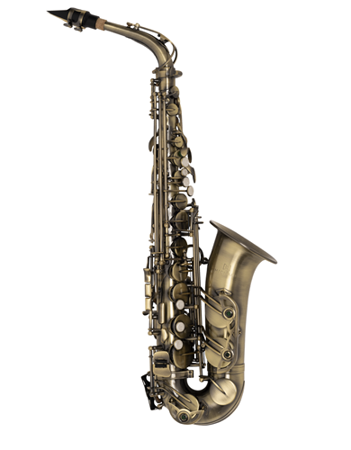
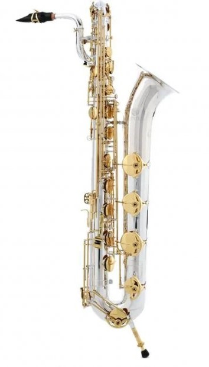

Home
Sobre
História
Tonalidade
Tipos
Principais
Soprano
Alto
Tenor
Baritono
Derivados
Soprillo
Sopranino
Soprano curvo
Mezzo-Soprano
Baixo
Contrabaixo
Subcontrabaixo
Galeria
Contato
Sax soprillo
Sax sopranino
Sax soprano
Sax soprano curvo
Sax alto

Sax Mezzo-Soprano
Sax tenor
Sax barítono

Sax baixo
Sax contrabaixo
Sax subcontrabaixo
Alyf Furlan 2024 - ©Todos os direitos reservados
Trabalho acadêmico sem fins lucrativos